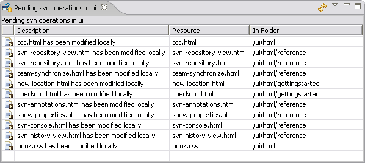

SVN Pending Operations View
This view is accessed via menu
option.

Features
The SVN Pending Operations View displays a summary
of the changes to your local working copy that
are pending since your last commit or check out operation. The summary does
not include changes made by others to files in the repository. To see your
local changes in relation to changes made to files in the repository, switch
to the Team Synchronizing
Perspective.
The table of pending operations has a comprehensive context menu and provides
access to the following features:
- Open
-
You can open the selected resource using either the default editor or
another editor of your choice
- Team
-
You have access to the full compliment of valid Team operations
- Compare
-
You can compare the selected resource to a variety of other file variants
such as the copy in the repository or your local pristine copy.
- Replace
-
You can also replace the selected resource with a variety of other file
variants.
Toolbar
 Refresh
Refresh -
Refresh the contents of the current pending operations view.
- Menu
-
Presents a menu of self explanatory display options controlling the contents
of the pending operations view.
Related Tasks
None
Related Reference
None